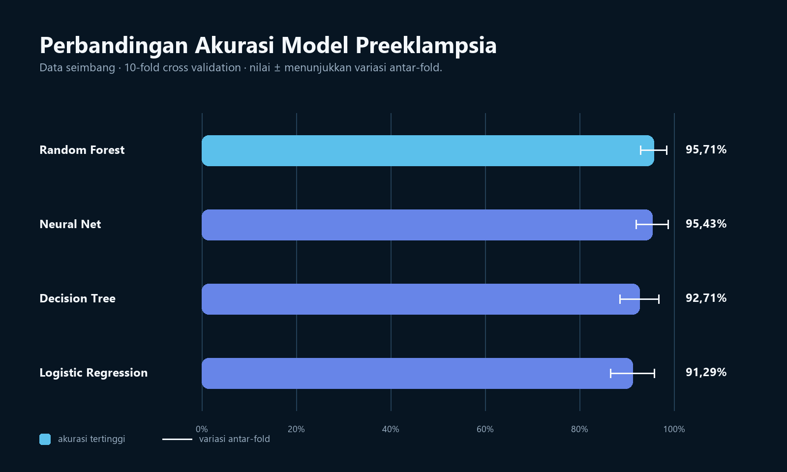

Analisis data
Mendukung eksplorasi dataset, analisis statistik, dan penyusunan visualisasi untuk memahami karakteristik fitur.
Semua Proyek/Preeclampsia Detection
← Kembali ke semua proyekWeb · Machine Learning · Research
Kontribusi pada aplikasi Django dan evaluasi model machine learning untuk mendukung riset prediksi preeklampsia berbasis data terstruktur.
Riset dan evaluasi

Empat algoritma diuji pada data seimbang menggunakan 10-fold cross validation. Nilai rata-rata dan variasi antar-fold dibaca bersama untuk melihat performa sekaligus kestabilannya.
| Model | Rata-rata akurasi | Variasi antar-fold |
|---|---|---|
| Random Forest | 95,71% | ±2,78% |
| Neural Network | 95,43% | ±3,42% |
| Decision Tree | 92,71% | ±4,12% |
| Logistic Regression | 91,29% | ±4,64% |
Hasil ini merupakan evaluasi pada dataset riset yang digunakan dalam proyek, bukan validasi klinis pada populasi umum.
Proyek dikerjakan oleh tiga anggota. Kontribusi saya berfokus pada analisis dan evaluasi data, penyusunan visualisasi hasil, serta membantu menghubungkan keluaran model ke alur aplikasi web Django.
Mendukung eksplorasi dataset, analisis statistik, dan penyusunan visualisasi untuk memahami karakteristik fitur.
Membandingkan model dengan pembagian data dan cross validation untuk melihat performa klasifikasi secara lebih stabil.
Berkontribusi pada aplikasi Django yang menyajikan input pengguna dan keluaran prediksi bagi kebutuhan riset.
Meninjau struktur dataset dan konteks variabel.
Menyiapkan skenario data mentah dan data seimbang.
Menguji beberapa algoritma dengan metrik klasifikasi.
Menyusun grafik evaluasi dan feature-weight.
Menghubungkan hasil riset dengan pengalaman web Django.
Macro F1, precision, recall, dan ROC-AUC digunakan sebagai konteks tambahan saat membandingkan model.
Output machine learning untuk kesehatan perlu diberi batasan penggunaan yang jelas dan tidak boleh diposisikan sebagai diagnosis.